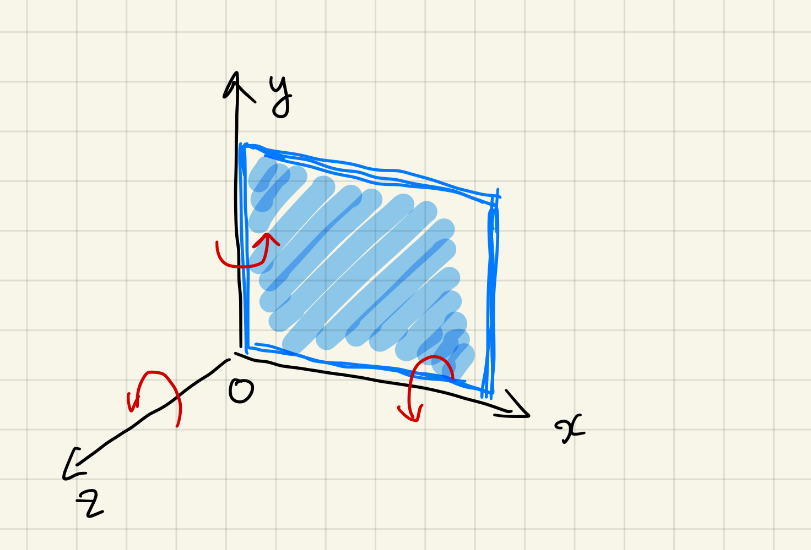
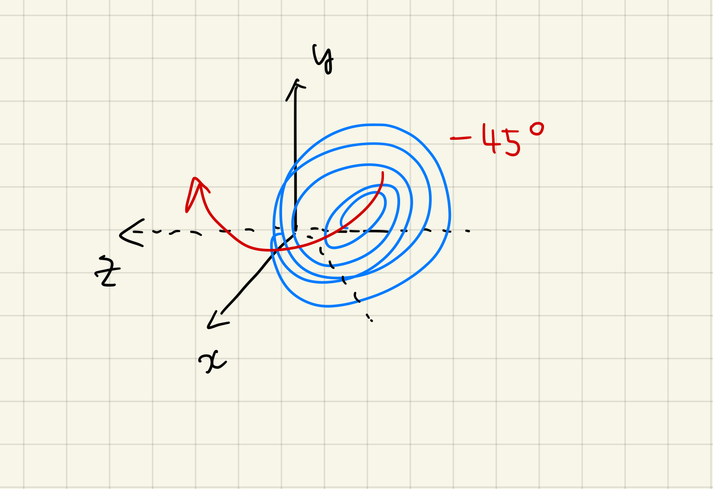

TNG_catcher.plot_tools
目次
TNG_catcher/ TNG_catcher.plot_tools
次の一行でモジュールを読み込みます。
from TNG_catcher import *
このモジュールは次のクラスが定義されてあります。
- extract_subhalo_data
- （順次作成中）
はじめに #
そこでこれらを簡単に取得したい／解析したいと思い、このモジュールを作成しました。
解析データの挿入（インスタンスの作成） #
import numpy as np
dd = np.load("data.npz")
test = plot_tools(dd)
インスタンスを作成するにあたり、読み込むのはNpzFileです。extract_subhalo_dataクラスなどで出力したものを使用します。独自に抽出したデータでも構いません。
簡易描画する #
「しっかり描画したい」とき、「簡易的に描画したい」ときというのがあると思います。
例えば、どんな概形かを知れればよく、解析途中であるときというのは、描画はなるだけ簡易的であるほうがいいです。そういうような場合は、simple_plot()メソッドを使いましょう。容量はあまり使わず、時間をかけずに描画できるように設計しています。
simple_plot()メソッド
#
simple_plot()メソッドは、matplotlib.pyplotモジュールを使って、簡易的に描画します。
test.simple_plot('x','y','Density')
引数に使用できるのは、NpzFileに含まれるキーです。
次のコマンドで使用できるキーを確認してください。
dd.files
また、独自に抽出したデータを使用する場合は、dd.filesと同じように、キーを確認し、使用するキーのデータは1次元であることを確認してください。
パラメータ #
test.simple_plot(x, y, z, bins=301, log=True, fast=False, savefig="")
x: x軸に使用するキー (array_like, shape (N,))y: y軸に使用するキー (array_like, shape (N,))z: z軸に使用するキー (array_like, shape (N,))bins: ピクセル数 (int, default: 301)log: 対数軸にするかどうか (bool, default:True)fast: 速度を優先するかどうか (bool, default:False)Falseのときは、pcolormeshを使用。Trueのときは、imshowを使用。
savefig: 画像を保存するかどうか (str, default:"")""のときは、保存しない。- 保存するときは、ファイル名を指定する。
- 同じファイル名の場合は、上書きせずに、連番をつけて自動的に保存します。
動作原理 #
numpy.histogram2dを使用して、データを2次元配列に変換して描画を行う。
デフォルトでは300×300に設定してある。
Pythonの仕様により、bins=301と+1されている。
このとき、集計する際にそれぞれの点では重み付けを行う。
この重み付けに使用するのが、パラメータのzである。
つまり、ラスタライズ画像を生成しているのに他ならない。
白塗りを消したい #
データ量が少ない(=ログを取れない)箇所に白塗りが出てしまうことがあります。これは少しダサイので、消したいと思います。
from matplotlib.colors import SymLogNorm
x,y,z = dd['x'], dd['y'], dd['Density']
bins = 801
xbins = np.linspace(x.min(), x.max(), bins)
ybins = np.linspace(y.min(), y.max(), bins)
hist, xed, yed = np.histogram2d(x, y, bins=(xbins, ybins), weights=z)
plt.imshow(hist.T, origin='lower', norm=SymLogNorm(linthresh=hist[hist>0].min(),vmin=hist[hist>0].min(), vmax=hist.max()))
plt.axis("off")
plt.colorbar()
plt.savefig("cg_sub.png",dpi=400)
観測対象を回転させる #
観測対象によっては、以下のように回転させたほうが見やすい場合があります。
背景はデータ数が少ない（ログをとることによって、値を定められない）箇所になります。バージョンによっては、これが解消されています。
test.simple_plot('x','y','Density')
rot_x(), rot_y(), rot_z()メソッド
#
これらのメソッドは、dd.filesに含まれるキー内に「x」,「y」,「z」のすべて存在する場合に利用できます。
先程、プロットした図は横軸にx軸、縦軸にy軸をとっているので、次のような座標系になります。
それゆえ、銀河は次のような位置にあることになり、おおよそy軸に対して-45°すればいいことも分かります。
この場合、rot_y()メソッドを使用します。
test.rot_y(-45)
これによって、インスタンスtest内の座標系が回転されました。
test.simple_plot('x','y','Density',fast=True)
再度、xy平面をプロットしてみると、銀河が45°回転していることが分かります。そして、もう少し別の軸を回転したほうが良さそうです。そこで、zy平面をプロットしてみます。
test.simple_plot('z','y','Density',fast=True)
今度は、x軸に対して60°回転したほうが良さそうです。そこで、rot_x()メソッドを使用します。
test.rot_x(60)
test.simple_plot('z','y','Density',fast=True)
いい感じに回転ができました。
test.simple_plot('x','y','Density',fast=True)
save_rot()メソッド
#
今回の観測対象に作用させた回転行列を保存することができます。保存するにはsave_rot()メソッドをしようします。
引数にはファイル名を書きます。
保存形式はnpy形式です。
拡張子は含めても含めなくてもどちらでも構いません。
test.save_rot("rotation_data")
インスタンス内で回転動作を記録しており、それを出力時に回転行列に変換しています。
faceonにする #
set_faceon() メソッド #
温度を計算する #
get_temp()メソッド
#
温度を計算するには、get_temp()メソッドを使用します。
これを計算するには次のキーが必要です。
- ElectronAbundance
- InternalEnergy
test.get_temp()
計算結果は、インスタンス内に保存されます。また、この関数は温度データを返します。
パラメータ #
test.get_temp()
return:Temperature(array_like, shape (N,))
インスタンス内データを表示する #
show()メソッド
#
一括ですべての表示するには、show()メソッドを使用します。
test.show()
インスタンスを保存したい #
計算をしたり、回転行列を作用させたとき、そのままの状態で保存したいときがあるかと思います。
そのときはsave_npz()メソッドを利用しましょう。
どのような回転作用を与えたかだけを保存したい、すべては保存したくないようなときはsave_rot()メソッドが有効です。
save_npz()メソッド
#
引数にはファイル名を書きます。
保存形式はnpz形式です。
拡張子は含めても含めなくてもどちらでも構いません。
test.save_npz('converted_data')
メソッド内では、numpy.savezが動いているだけです。
$$ R_x(\theta) = \begin{pmatrix} 1 & 0 & 0 \cr 0 & \cos\theta & -\sin\theta \cr 0 & \sin\theta & \cos\theta \end{pmatrix} $$
$$ R_y(\theta) = \begin{pmatrix} \cos\theta & 0 & \sin\theta \cr 0 & 1 & 0 \cr -\sin\theta & 0 & \cos\theta \end{pmatrix} $$
$$ R_z(\theta) = \begin{pmatrix} \cos\theta & -\sin\theta & 0 \cr \sin\theta & \cos\theta & 0 \cr 0 & 0 & 1 \end{pmatrix} $$